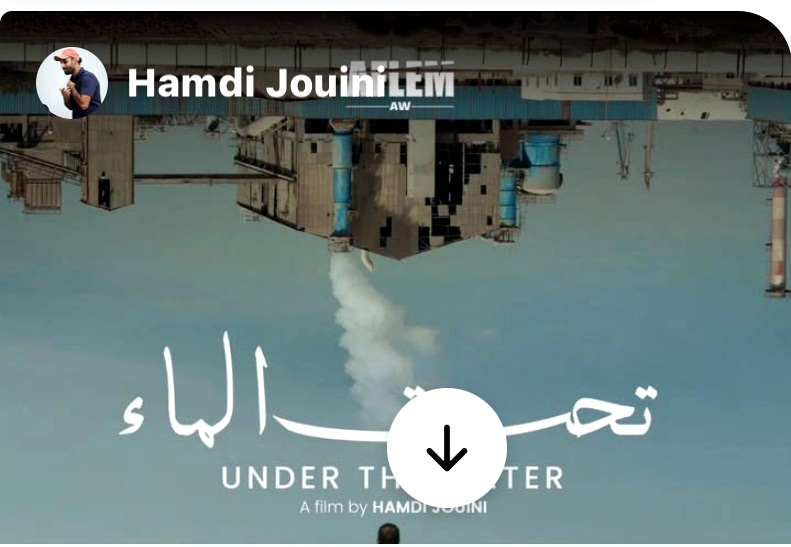
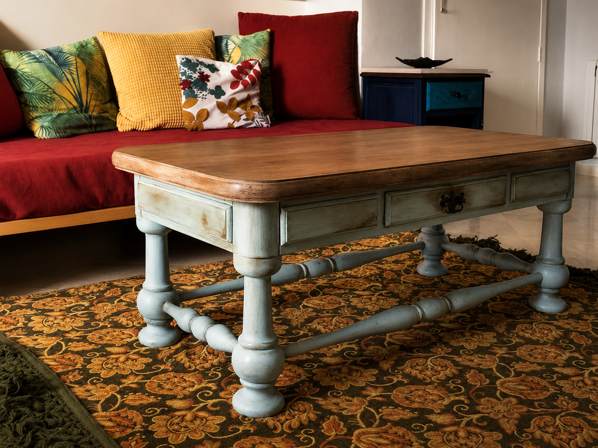
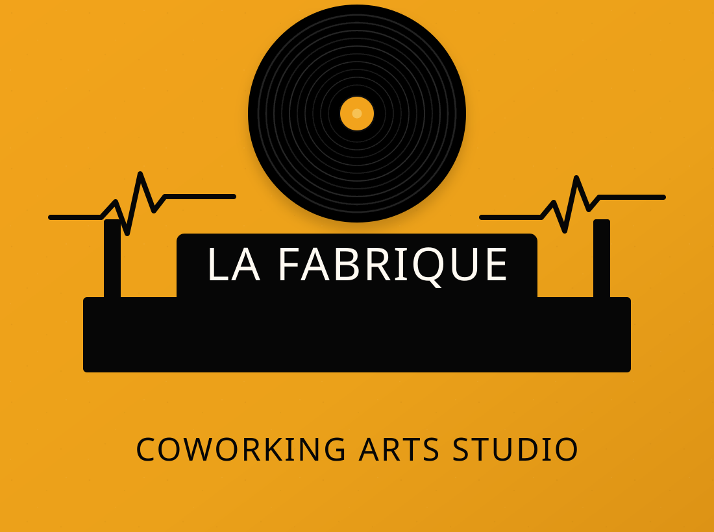
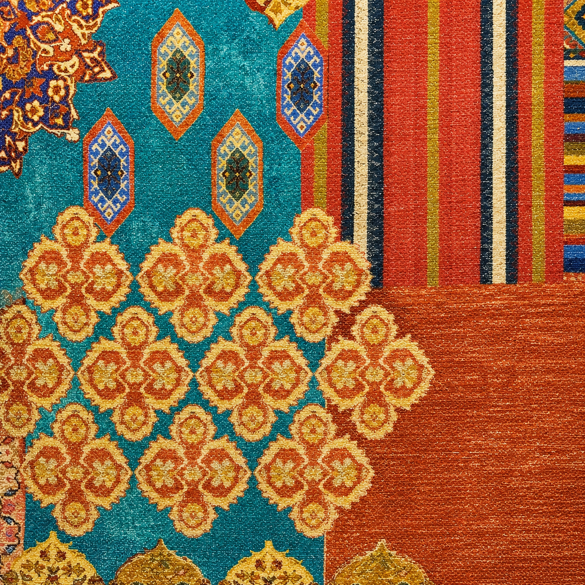
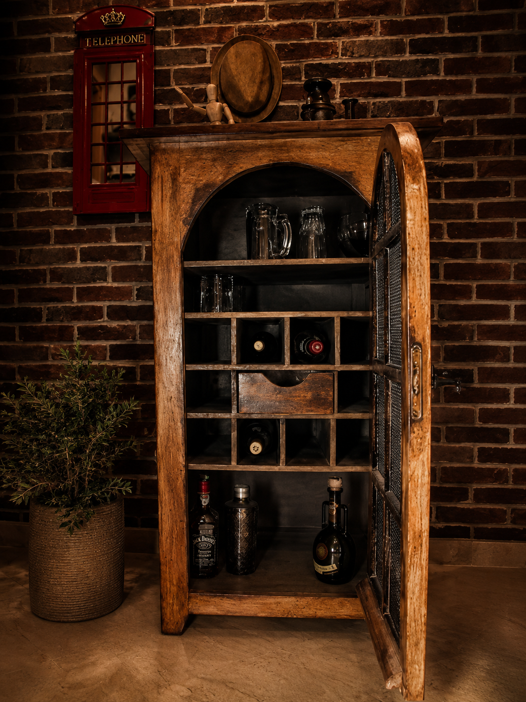
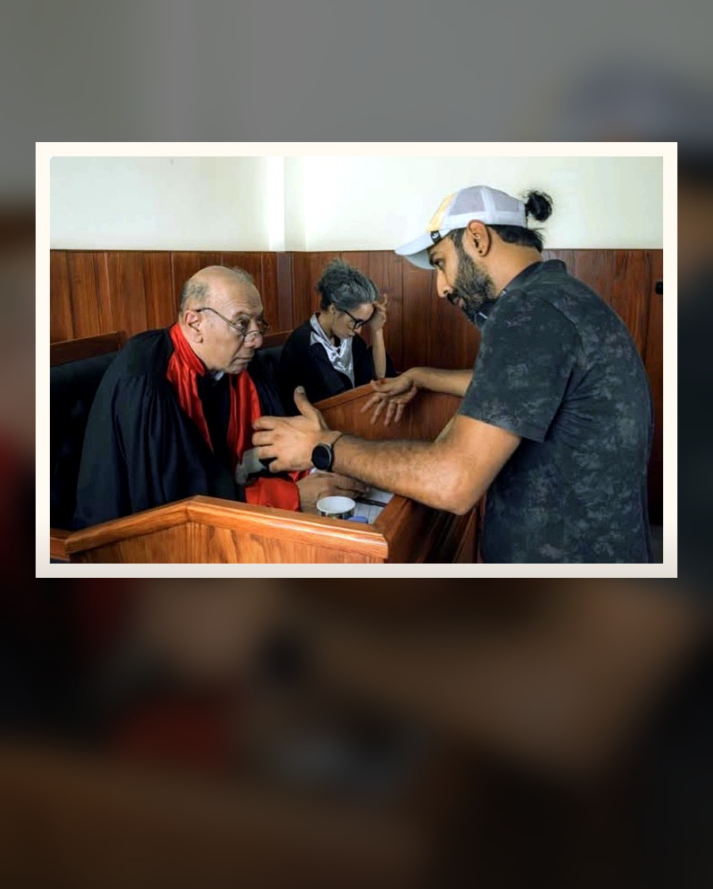
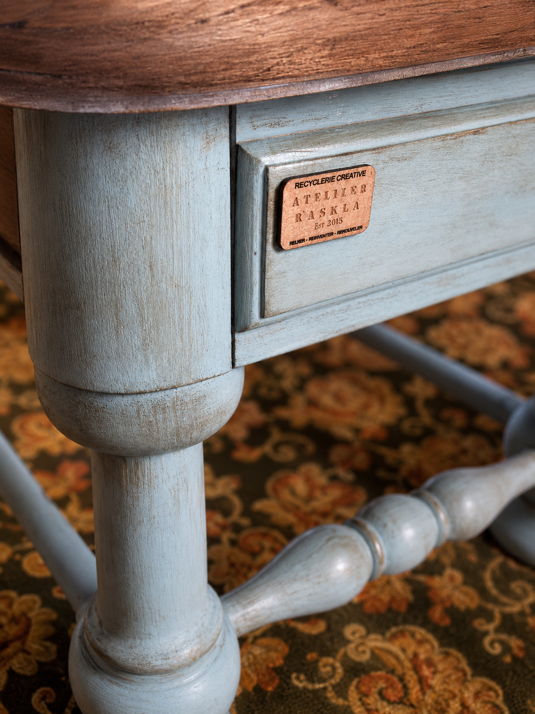

Mémoire
Conserver les traces, l’usage et la charge émotionnelle des matériaux.
Chargement du portfolio
Design éthique · Scénographie · Matière · Cinéma
Sabrina Bouazzi compose des espaces, décors et objets où le réemploi devient poésie visuelle, récit sensible et geste scénographique.
Vision artistique
Formée en architecture, Sabrina lit l’espace comme une scène et la matière comme une archive. Bois, tissu, meubles, objets usés ou fragments abandonnés deviennent des présences actives.
Sa démarche croise scénographie, design durable, arts vivants et cinéma. Elle crée des environnements où l’objet n’est pas décoratif seulement : il porte une mémoire, une tension, une poésie.
Un objet réinventé n’est pas réparé pour disparaître : il est transformé pour raconter.
Conserver les traces, l’usage et la charge émotionnelle des matériaux.
Transformer sans effacer, composer avec les contraintes et les accidents.
Créer des espaces capables d’accueillir un corps, une histoire et une image.
Portfolio sélectionné
Une grille éditoriale filtrable pour présenter les projets cinéma, expositions, atelier et recherche matière.

Assistanat décorateur, accessoires, atmosphère et cohérence visuelle du plateau.

Design durable, récupération créative et transformation poétique des objets.

Surface, image, mémoire et narration visuelle.

Dialogue entre matière, mémoire, patrimoine et geste artisanal.

Recyclerie créative de meubles, scénographie, design d’intérieur durable et objets narratifs.

Cinéma & arts vivants
Sabrina intervient sur la décoration de plateau, la création d’accessoires, le choix des textures, l’ambiance, le mobilier transformé et la cohérence spatiale. Son regard d’architecte donne au décor une structure, une circulation et une dramaturgie.
Image placée ici : photo de plateau liée au travail de décor et de scénographie cinéma.
Atelier pluridisciplinaire
Atelier éco-responsable mêlant scénographie, architecture, design éthique, artisanat, recyclage créatif, costumes, art graphique, BD et court métrage en cours.

Chaque pièce valorise le détail, le toucher et la mémoire de la matière, avec une attention particulière portée aux finitions et à la présence de l’objet dans l’espace.
Concept, volumes, circulation, ambiance et composition visuelle.
Bois, textile, meuble, accessoire, objet trouvé et mobilier recyclé.
Art graphique, bande dessinée, court métrage et narration plastique.
Parcours
Un parcours hybride, de l’architecture au textile, de la menuiserie à la scénographie.
Court métrage réalisé par Hamdi Jouini.
2e édition de Upcyc’Art, Startup Village.
Recyclerie créative de meubles et design d’intérieur durable.
Ferme artistique et biologique, communauté de femmes artistes et artisanes.
Mobilier et design d’extérieur.
Tissus italiens pour ameublement.
Ascenseurs et structures architecturales.
Revêtements muraux et sols.
Création et confection textile.
Contact
Basée à Gammarth Village, La Marsa, Tunis. Disponible pour cinéma, arts vivants, expositions, design d’espace et collaborations interdisciplinaires.